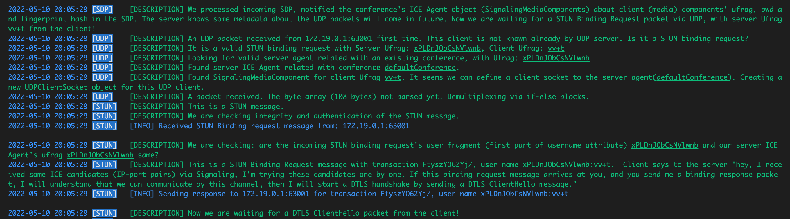

4. STUN BINDING REQUEST FROM CLIENT¶
In previous chapters:
- The client joined the conference room
- Initialized webcam and microphone devices, created media stream, video and audio tracks
- The client and the server exchanged SDP Offer and Answer via Signaling WebSocket
- Now, interaction over UDP is starting: The client sends STUN Binding Request message.
Note: For detailed information about STUN Protocol, you can find at "2.4.2. Implementing STUN Protocol (as Client)" chapter in 2. BACKEND INITIALIZATION
4.1. UDP Demultiplexing¶
First of all, this is our first "expected" packet incoming via UDP. " Demultiplexing" mechanism on sockets are implemented in a different (well architected) way, but in this project, we implemented the plain way. Let's explain our demultiplexing mechanism:
- UDP listener object receives a packet (byte array) in "Run" function in backend/src/udp/udpListener.go
- Checks if the packet came from a known socket
- Forwards the packet buffer to "AddBuffer" function in backend/src/agent/udpclientsocket.go
- The "AddBuffer" function checks which protocol the packet can be related with:
from backend/src/agent/udpclientsocket.go
func (ms *UDPClientSocket) AddBuffer(buf []byte, offset int, arrayLen int) {
logging.Descf(logging.ProtoUDP, "A packet received. The byte array (<u>%d bytes</u>) not parsed yet. Demultiplexing via if-else blocks.", arrayLen)
if stun.IsMessage(buf, offset, arrayLen) {
logging.Descf(logging.ProtoSTUN, "This is a STUN message.")
...
} else if dtls.IsDtlsPacket(buf, offset, arrayLen) {
logging.Descf(logging.ProtoDTLS, "This is a DTLS packet.")
...
} else if rtp.IsRtpPacket(buf, offset, arrayLen) {
logging.Descf(logging.ProtoRTP, " This is an RTP packet.")
....
} else if rtcp.IsRtcpPacket(buf, offset, arrayLen) {
logging.Descf(logging.ProtoRTP, "This is an RTCP packet.")
...
} else {
logging.Descf(logging.ProtoUDP, "This packet in a different format which is not known by the server, ignoring it.")
logging.Warningf(logging.ProtoUDP, "Unknown message from: <u>%s</u>, <u>%v</u>", ms.Addr, buf[offset:offset+arrayLen])
}
}
In this context, we can check out stun.IsMessage function. This function checks:
- Data length (arrayLen) is greater than messageHeaderSize (20 bytes)
and - 4 bytes after 4. byte (between 4. and 8. indices) equals to STUN magicCookie (constant value, 0x2112A442).
If this buffer part complies with these conditions, we can say "this packet is a STUN protocol packet", then we can process it with STUN protocol's methods.
from backend/src/stun/message.go
func IsMessage(buf []byte, offset int, arrayLen int) bool {
return arrayLen >= messageHeaderSize && binary.BigEndian.Uint32(buf[offset+4:offset+8]) == magicCookie
}
Click to expand Wireshark capture (Received): STUN Binding Request
Frame 414: 140 bytes on wire (1120 bits), 140 bytes captured (1120 bits) on interface lo0, id 0
Null/Loopback
Internet Protocol Version 4, Src: 192.168.***.***, Dst: 192.168.***.***
User Datagram Protocol, Src Port: 52993, Dst Port: 15000
Session Traversal Utilities for NAT
[Response In: 451]
Message Type: 0x0001 (Binding Request)
Message Length: 88
Message Cookie: 2112a442
Message Transaction ID: 467479737a594f3632596a2f
[STUN Network Version: RFC-5389/8489 (3)]
Attributes
USERNAME: xPLDnJObCsNVlwnb:vv+t
Attribute Type: USERNAME
0... .... .... .... = Attribute Type Comprehension: Required (0x0)
.0.. .... .... .... = Attribute Type Assignment: IETF Review (0x0)
Attribute Length: 21
Username: xPLDnJObCsNVlwnb:vv+t
Padding: 3
GOOG-NETWORK-INFO
Attribute Type: GOOG-NETWORK-INFO
1... .... .... .... = Attribute Type Comprehension: Optional (0x1)
.1.. .... .... .... = Attribute Type Assignment: Designated Expert (0x1)
Attribute Length: 4
Google Network ID: 1
Google Network Cost: Low (10)
ICE-CONTROLLED
Attribute Type: ICE-CONTROLLED
1... .... .... .... = Attribute Type Comprehension: Optional (0x1)
.0.. .... .... .... = Attribute Type Assignment: IETF Review (0x0)
Attribute Length: 8
Tie breaker: 3d35f1dedc0b9ace
PRIORITY
Attribute Type: PRIORITY
0... .... .... .... = Attribute Type Comprehension: Required (0x0)
.0.. .... .... .... = Attribute Type Assignment: IETF Review (0x0)
Attribute Length: 4
Priority: 1853824767
MESSAGE-INTEGRITY
Attribute Type: MESSAGE-INTEGRITY
0... .... .... .... = Attribute Type Comprehension: Required (0x0)
.0.. .... .... .... = Attribute Type Assignment: IETF Review (0x0)
Attribute Length: 20
HMAC-SHA1: 5b8ea8d6e018e4789af5f951e64e5f737e2539df
FINGERPRINT
Attribute Type: FINGERPRINT
1... .... .... .... = Attribute Type Comprehension: Optional (0x1)
.0.. .... .... .... = Attribute Type Assignment: IETF Review (0x0)
Attribute Length: 4
CRC-32: 0xaaff24d0
Here is the console output when the server received an "expected" STUN Binding Request.

After we determined that this packet is STUN packet, our steps will be:
- Decode the byte array as stun.Message object via "DecodeMessage" function backend/src/stun/message.go
- Validate the STUN packet's integrity via HMAC and fingerprint via CRC32, by "Validate" function backend/src/stun/message.go
- We only support "Binding Request" message type as incoming STUN packet, because of this, we have only one case.
- Split the AttrUserName attribute's value with ":", interpret first part as serverUfrag, second part as clientUfrag. serverUfrag represents which Server ICE Agent (conference) the client wants to communicate.
- While creating UdpClientSocket objects, we specify related ServerUfrag and ClientUfrag (values coming previously by SDP data), so a UdpClientSocket can accept STUN packets that only have the server ufrag value and the client ufrag value it has. Because of this, we check these values.
- If everything is OK, we create a STUN Binding Response packet (by calling "createBindingResponse" function) and send it. This means "I accept your request, we can communicate by this channel, send me DTLS ClientHello message".
from backend/src/agent/udpclientsocket.go
switch stunMessage.MessageType {
case stun.MessageTypeBindingRequest:
userNameAttr, userNameExists := stunMessage.Attributes[stun.AttrUserName]
if !userNameExists {
return
}
userNameParts := strings.Split(string(userNameAttr.Value), ":")
serverUfrag := userNameParts[0]
clientUfrag := userNameParts[1]
logging.Descf(logging.ProtoSTUN, "We are checking: are the incoming STUN binding request's user fragment (first part of username attribute) <u>%s</u> and our server ICE Agent's ufrag <u>%s</u> same?", serverUfrag, ms.ServerUfrag)
if serverUfrag != ms.ServerUfrag {
logging.Descf(logging.ProtoUDP, "STUN Binding Request message forwarded wrong agent, serverUfrag <u>%s</u> points, ignore it.", serverUfrag)
return
}
if clientUfrag != ms.ClientUfrag {
logging.Descf(logging.ProtoUDP, "It seems a STUN Binding Request message received after processed first one, clientUfrag <u>%s</u>, ignore it.", clientUfrag)
return
}
logging.Descf(logging.ProtoSTUN, "This is a STUN Binding Request message with transaction <u>%s</u>, user name <u>%s</u>. Client says to the server \"hey, I received some ICE candidates (IP-port pairs) via Signaling, I'm trying these candidates one by one. If this binding request message arrives at you, and you send me a binding response packet, I will understand that we can communicate by this channel, then I will start a DTLS handshake by sending a DTLS ClientHello message.\"", stunMessage.TransactionID, string(userNameAttr.Value))
bindingResponse := createBindingResponse(stunMessage, ms.Addr, string(userNameAttr.Value))
logging.Infof(logging.ProtoSTUN, "Sending response to <u>%v:%v</u> for transaction <u>%s</u>, user name <u>%s</u>\n", ms.Addr.IP, ms.Addr.Port, stunMessage.TransactionID, string(userNameAttr.Value))
encodedBindingResponse := bindingResponse.Encode(ms.ServerPwd)
ms.Conn.WriteToUDP(encodedBindingResponse, ms.Addr)
logging.Descf(logging.ProtoSTUN, "Now we are waiting for a DTLS ClientHello packet from the client!")
}
Click to expand Wireshark capture (Sent): STUN Binding Response
Frame 451: 144 bytes on wire (1152 bits), 144 bytes captured (1152 bits) on interface lo0, id 0
Null/Loopback
Internet Protocol Version 4, Src: 192.168.***.***, Dst: 192.168.***.***
User Datagram Protocol, Src Port: 15000, Dst Port: 52993
Session Traversal Utilities for NAT
[Request In: 414]
[Time: 0.004788000 seconds]
Message Type: 0x0101 (Binding Success Response)
.... ...1 ...0 .... = Message Class: 0x10 Success Response (2)
..00 000. 000. 0001 = Message Method: 0x0001 Binding (0x001)
..0. .... .... .... = Message Method Assignment: IETF Review (0x0)
Message Length: 92
Message Cookie: 2112a442
Message Transaction ID: 467479737a594f3632596a2f
[STUN Network Version: RFC-5389/8489 (3)]
Attributes
XOR-MAPPED-ADDRESS: 172.19.0.1:63001
Attribute Type: XOR-MAPPED-ADDRESS
0... .... .... .... = Attribute Type Comprehension: Required (0x0)
.0.. .... .... .... = Attribute Type Assignment: IETF Review (0x0)
Attribute Length: 8
Reserved: 00
Protocol Family: IPv4 (0x01)
Port (XOR-d): d70b
[Port: 63001]
IP (XOR-d): 8d01a443
[IP: 172.19.0.1]
USERNAME: xPLDnJObCsNVlwnb:vv+t
Attribute Type: USERNAME
0... .... .... .... = Attribute Type Comprehension: Required (0x0)
.0.. .... .... .... = Attribute Type Assignment: IETF Review (0x0)
Attribute Length: 21
Username: xPLDnJObCsNVlwnb:vv+t
Padding: 3
SOFTWARE
Attribute Type: SOFTWARE
1... .... .... .... = Attribute Type Comprehension: Optional (0x1)
.0.. .... .... .... = Attribute Type Assignment: IETF Review (0x0)
Attribute Length: 15
Software: WebRTCNutsBolts
Padding: 1
MESSAGE-INTEGRITY
Attribute Type: MESSAGE-INTEGRITY
0... .... .... .... = Attribute Type Comprehension: Required (0x0)
.0.. .... .... .... = Attribute Type Assignment: IETF Review (0x0)
Attribute Length: 20
HMAC-SHA1: 8d55bd07b6dfda1861f4f37541248a6ee330330c
FINGERPRINT
Attribute Type: FINGERPRINT
1... .... .... .... = Attribute Type Comprehension: Optional (0x1)
.0.. .... .... .... = Attribute Type Assignment: IETF Review (0x0)
Attribute Length: 4
CRC-32: 0x8387d149
Now, the client will send a ClientHello message and we can start the DTLS Handshake process.
Note that, one of reference link "ClientHello" refers to "The Transport Layer Security (TLS) Protocol Version 1.2", reference link of "DTLS Handshake" refers to "Datagram Transport Layer Security". Because DTLS was developed over TLS.